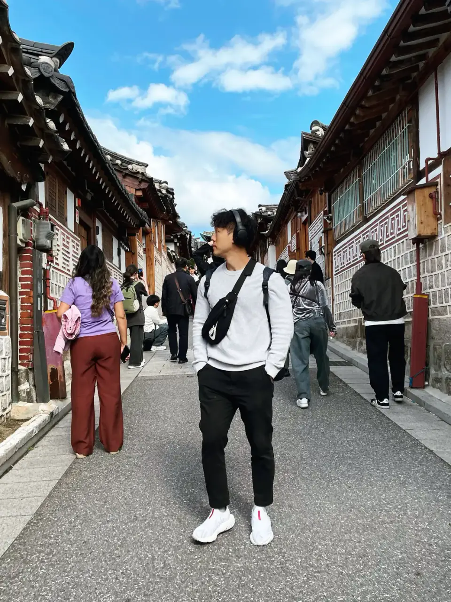
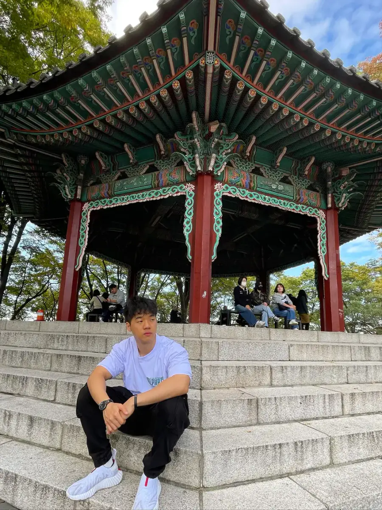
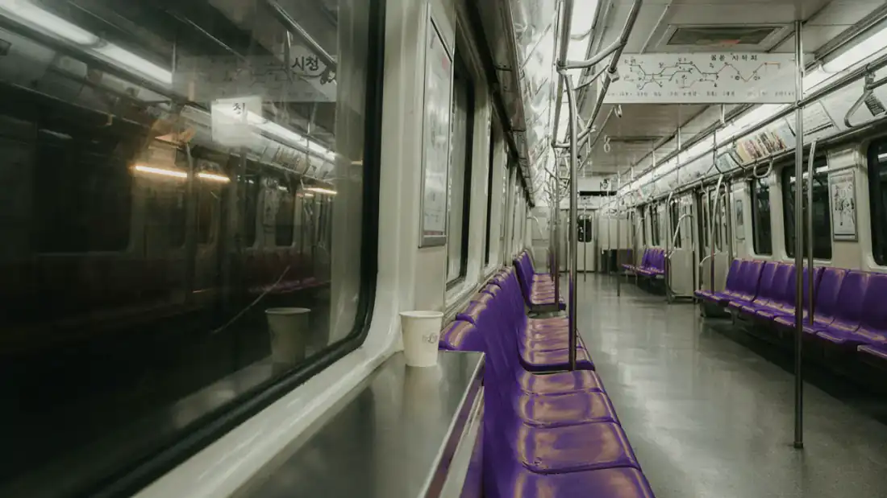

개인 수업01
Aula particular
Aulas individuais e personalizadas, montadas a partir do seu nível e do seu objetivo, seja viajar, conversar ou destravar a fala.
Valores e horários sob consulta
Consultar no Direct →Arturo Yeo Kim · Professor de coreano

하나 Quem ensina

Arturo Yeo Kim é o professor por trás do Fabricando Coreanos, perfil onde ensina coreano todos os dias para milhares de brasileiros.
O foco é o coreano das situações que realmente acontecem: o táxi, o metrô, o restaurante, o check-in, a conversa que vai rápido demais. Nada de estudar apenas teoria.
“Eu nunca imaginei que saber falar coreano me levaria a viver algo tão especial.”
Arturo, sobre trabalhar como intérprete no Rio de Janeiro

둘 Como as aulas trabalham
Uma linha de estudo pensada como o metrô de Seul: cada estação prepara você para a próxima. O ponto de partida e o ritmo são definidos com o Arturo, de acordo com o seu nível.
Ler e escrever o alfabeto coreano e entender a lógica por trás das sílabas, a base de tudo que vem depois.
Partículas, verbos, conjugações e conjunções. Palavras sempre com contexto, porque traduzir palavra por palavra pode fazer você entender tudo errado.
Falar de um jeito que o coreano entenda e, principalmente, entender a resposta quando ela vem rápido.
Construir frases sem depender de um modelo e responder perguntas com mais agilidade. Entender e falar são habilidades diferentes, e as duas são treinadas.
Aeroporto de Incheon, táxi, metrô, restaurante, compras, hotel. Aplicar o que você estudou nas situações que realmente acontecem.
셋 Para quem são as aulas
Nunca estudou coreano? O primeiro passo é o Hangul, e ele vem antes de qualquer pressa.
Para pedir comida, pegar táxi, usar o metrô e se virar nas compras sem depender do tradutor.
Conhece bastante vocabulário e ainda sente dificuldade para responder? É hora de treinar a fala.
Dá para aprender muito com doramas, mas nem tudo que funciona na tela funciona na vida real. O contexto faz a diferença.
넷 Aulas
Aulas individuais e personalizadas, montadas a partir do seu nível e do seu objetivo, seja viajar, conversar ou destravar a fala.
Valores e horários sob consulta
Consultar no Direct →Um conjunto de aulas para quem quer seguir uma sequência com objetivo definido, como a preparação para uma viagem.
Disponibilidade sob consulta
Perguntar sobre pacotesPara quem quer estudar com constância e evoluir do básico à conversação, com acompanhamento ao longo do caminho.
Disponibilidade sob consulta
Perguntar sobre acompanhamentoFormatos, valores, duração e horários são combinados diretamente com o Arturo pelo Direct do Instagram.
다섯 Por que com o Arturo
Táxi, metrô, restaurante, compras, check-in e aeroporto: o conteúdo nasce do que acontece na Coreia.
Expressões do dia a dia, com contexto, e não só frases de livro.
Aulas particulares que partem do seu nível e do seu objetivo.
Do silêncio no metrô ao jeito certo de recusar com educação, a língua vem acompanhada dos códigos culturais.
Arturo já atuou como intérprete e ensina diariamente para uma comunidade de mais de 33 mil seguidores.
여섯 Direto do feed
Frases ensinadas pelo Arturo no @fabricandocoreanos.
“Para onde você vai?” Uma das frases que você mais vai ouvir no táxi.
Ver no Instagram ↗“Por favor, fale devagar.” Uma das três primeiras frases para a viagem.
Ver no Instagram ↗“Sério?” / “É verdade?” Expressão muito útil para reconhecer em conversas.
Ver no Instagram ↗일곱 Dúvidas
Não. As aulas são personalizadas e partem do seu nível. Se você está começando do zero, o ponto de partida é o Hangul.
Sim. O foco do Fabricando Coreanos é o coreano para situações reais: aeroporto, táxi, metrô, restaurante, compras e hotel.
Serve. Entender e falar são habilidades diferentes, e a conversação treina justamente construir frases e responder com mais agilidade.
Esses detalhes são combinados diretamente com o Arturo, de acordo com o seu objetivo e a sua disponibilidade. Mande uma mensagem no Direct para saber as opções atuais.
Os valores dependem do formato escolhido (aula avulsa, pacote ou acompanhamento) e são informados pelo Direct do Instagram.
Envie uma mensagem para o @fabricandocoreanos no Direct do Instagram contando seu nível e seu objetivo com o coreano.
Matrículas pelo Direct
시작해요!